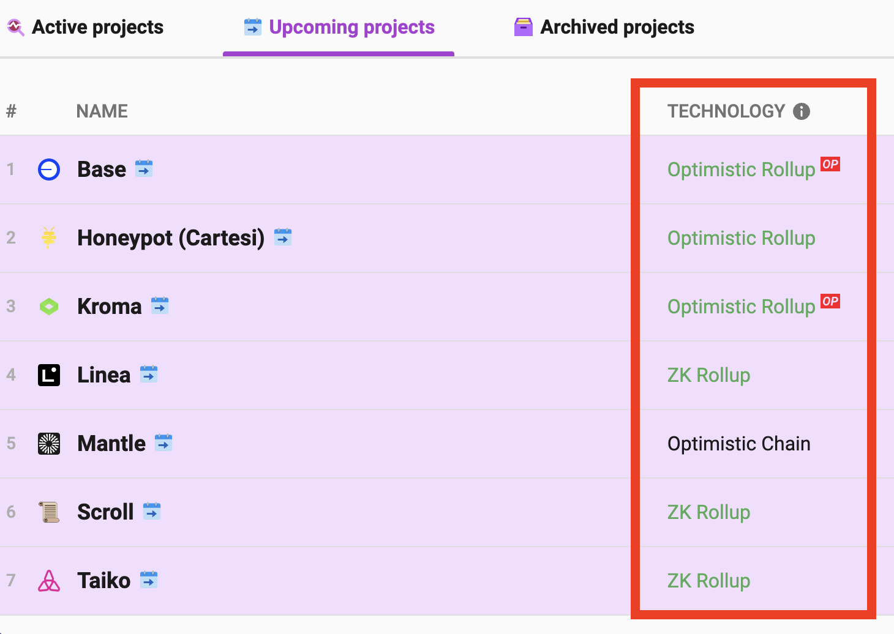
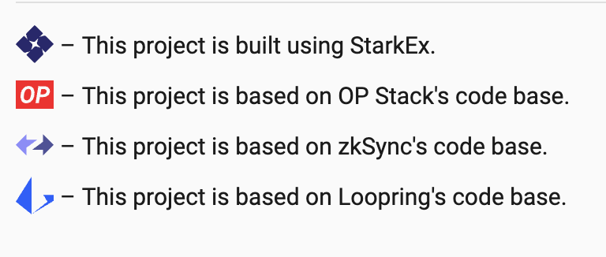
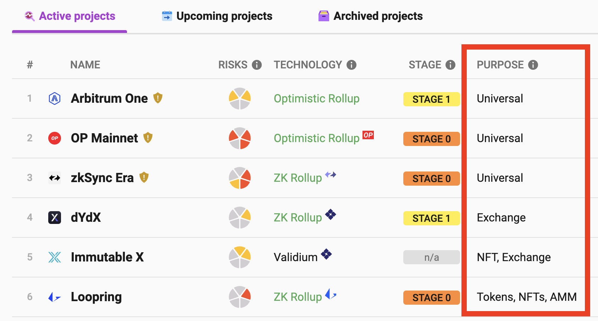
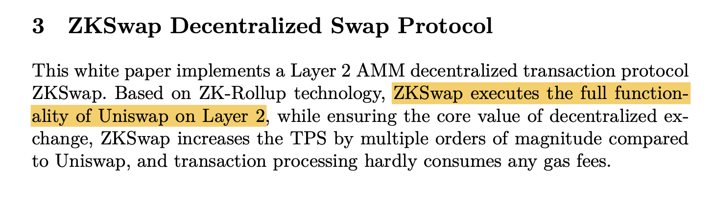
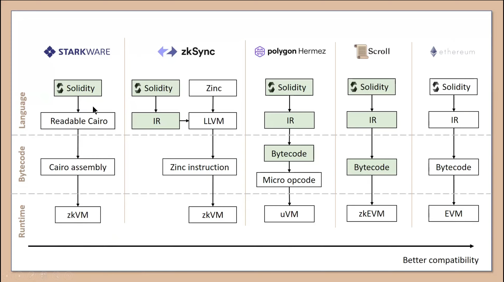

对 Layer 2 项目创业想法的回复
说明：没有任何不尊重来信的意思，邮件中对于 L2 的观点带给我很多启发，因为其中有一些内容和我认知不完全一致，我认真理解和思考了来信的含义，所以想借此表达一下我对 L2 的看法。博客中 L2 相关的内容比较少，就放到博客上来了，这里只是单纯作为技术问题讨论一下
来信
你好，还在找工作吗？
Jul 6, 2023, 5:39 PM (2 days ago)
to me
wangyu 你好！
无意间看到了你的博客，也不知道这个邮箱能不能收到。
今年开始 L2 开始火起来了。各种大公司，只要有点钱的，都开始怼 L2
从 L2beat 来看，还有不少 L2 即将上线 https://l2beat.com/scaling/tvl#upcoming
也不清楚是不是天下 L2 一大抄。但总感觉目前的 L2 技术都差不多来源于几家头部公司的开源代码。
如果真的是这样，是不是就可以意味着阿猫阿狗都可以自己 Fork 出一个版本来了呢？
如果是的话，那么我们就是那个"阿猫阿狗" :)
我们创业团队挺有兴趣蹭蹭 L2 公链"热潮"的，感觉您在这块应该是一把好手。
如果你也有兴趣，我们可以进一步聊聊合作方式？
我大概的想法是远程、由你自由主导的链演化路线
PS: 我的 telegram 是 @****** 欢迎在线联系我。
回复
您好！
非常高兴收到您的邮件，也很抱歉没有太及时回复。
我尝试认真理解您来信的内容，对于其中提到一些关于 L2 的观点，我想描述一下我的理解。
1. “技术类型” 和 “项目” 的区别
Layer 2 有 4 种技术类型，State channels、Sidechains、Optimistic rollups、ZK rollups，所有的项目都属于这 4 种类型内，在即将上线的项目中，大多数是 rollups 类型，但是没有信息他们的代码是不是 fork 已有项目的。
具体项目的话是有这 4 个：
但是从已上线的项目列表看，即使是 fork 相同的项目，他们的应用场景也是有很大差异、高度定制化的:
2. 现有的项目不是简单的 fork
以 zkSync 为例，在列表上能看到 3 个项目有这个标识：

分别是 zkSync Era、zkSync Lite 和 ZKSpace，其中 zkSync Era 和 zkSync Lite 是同一家。
再具体看 ZKSpace，他确实是用了 zkSync 的合约，但并不是单纯的 fork 整个项目，而是使用了 zkSync 的合约代码，在其基础上做一些修改适配自己的业务。同时，ZKSpace 也使用了其他项目的代码。

从 ZKSpace（以前是 ZKSwap）的白皮书能看到，ZKSpace 想做的事情是 Layer 2 上的 Uniswap，包含了 AMM 的功能，也就是交易所市商的那些东西。
zkSync 是一个通用的 Layer 2 项目，本身不提供太具体的功能，ZKSpace 使用了一些 zkSync 的合约代码，在那个基础上做一些事情，而且是业务强相关、有具体目标的事情。他并不和 zkSync 本身抢市场。
再看比如有 OP 标的项目，也就是基于 OP 项目 fork 的。
- Arbitrum 一开始是 fork OP 的，然后改了一些经济模型方面的东西，后来做大了又重构项目。而且 arb 的运营能力很强，举办过几次奥德赛。
- Boba 的特点是 withdraw 余额不需要等 7 天，马上提取，另外通过他自己叫做混合计算的技术，把 web2 的网页能力带到区块链上。
- Zora 是一个专做 NFT 领域的 layer2.
- Mantle 提供了去中心化的序列器之类。
总的来说，这些项目都是有具体的目的，想要实现某一种功能，然后把现成的代码拿过来，复用一下，重点可能比较在于这些项目的目标，也就是想干什么样的事情。他们都是结合了自己的业务场景，而不是简单的 fork 下来就能运行。
3. L2 不是链
目前的 rollups 项目都是中心化的，本身不是一条链，没有共识之类的东西，主要是项目方在运营。
小结
所以关于您提到的想做 L2 方向的项目，我的意思是，从您的描述来看，可能没有您想的那么简单，其中会很涉及到一些具体问题。也许需要应用场景上的创新，和 defi 或者 gamefi 场景结合之类，或者技术特点上的创新，能够改善某种痛点。
我也很想蹭热点，也希望能有合适的创业机会，我现在也是在找工作，不过从我的角度看还是挺迷茫的，我本身没有太直接的想法，一个项目该往什么样的方向做之类，我觉得那些都涉及到挺市场化的东西，需要很大的资本力量。
不知道您具体是什么样的想法。由于内容比较多，就以邮件的方式回复了。有问题您随时联系我。
补充
有一些在回复中没有提到的话题，顺便展开聊一聊。
首先是 Layer 2 为什么火？因为 Vitalik 在最近的博客中频繁提到 zkEVM，比如在文章 Endgame 中，把支持 ZK-rollup 认为是以太坊未来的重要工作之一。有些问题没办法在 Layer 1 直接解决，就希望通过 Layer 2 解决。有 Vitalik 这样的备受关注的开发者引领生态上的技术方向，Layer 2 就成为了以太坊的发展热点。
Vitalik 比较看好 ZK-SNARKs 类的 zkEVM，从技术角度，ZK-rollups 将是所谓的 Endgame。但是 ZK 的开发成本非常高，目前还处于研究开发，小体量的资本玩不起，太贵了。
Dapp-learning 社区在 Youtube 上有一个 Scroll 的技术分享视频，内容挺好的。Scroll 的整个技术团队都在国内，从视频的讲解中感觉似乎 Scroll 的技术方案是有一些暴力成分在里面的，就是既然写 circuits 不容易，那就把某一类型的 circuits 结果作为一张表，用的时候查表，然后去不断扩充出各种表以支持整个 EVM。这是 Scroll 对比了各 ZK 项目实现 EVM 完备的方式：
Vitalik 的博客文章 The different types of ZK-EVMs 也提到了对 zkEVM 的分类。不管怎么说，Layer 2 的火热应该是指基于 ZK-rollup 的项目打得火热。
Optimistic rollups 更像是 L2 的一种过渡方案，相信 ZK 出来后 OP 类的项目都会受到打击，因为 OP 并不依赖于加密技术的可靠性，从命名上就能看出来他是乐观主义，先认为一笔交易没有问题，然后给 7 天的挑战期，如果交易有问题，需要用户自主发起挑战，或者由第三方验证者来完整挑战，有很大程度的人为干预在里面。
再一个是 L2 项目中心化的问题。除了 Sidechains 的项目，L2 一定是中心化的，因为共识交给 L1 去做，L2 本身不管这个，从动机上，L2 起到的作用是快速地把交易收集起来打包发到 L1 上，一笔交易最终的信任是落到 L1 上的，用户相信的不是 L2 而是 L1 上的交易记录，所以 L2 不需要去中心化，用户不需要，项目方也没有必要。L2 一般是有项目方在发行和运营，用户信任项目的技术方案，才愿意到项目上玩，把资产质押进去。
还有 L2 使用体验的问题，目前很少有用户会把 OP 或者 ARB 作为低成本资产转移的方案，宁愿用 BNB 或者 TRX 来实现匿名场景的支付，使用比较多的还是治理 token 的投资或者 DApp 项目形式的交互。OP 赎回资产需要 7 天的等待期这一点就挺难用的，L2 链之间的资产转移也是个问题，比如在 OP 上的 USDT 能不能转移到 ARB 上，不然我用 OP，另一个人用 ARB，我们就没法交易了。在这个方面还有很大的提升空间。
L2 是很有前景的技术方向，期待它能带给我们更好的使用体验，至于其中有没有低成本的获利空间，就不太清楚了。